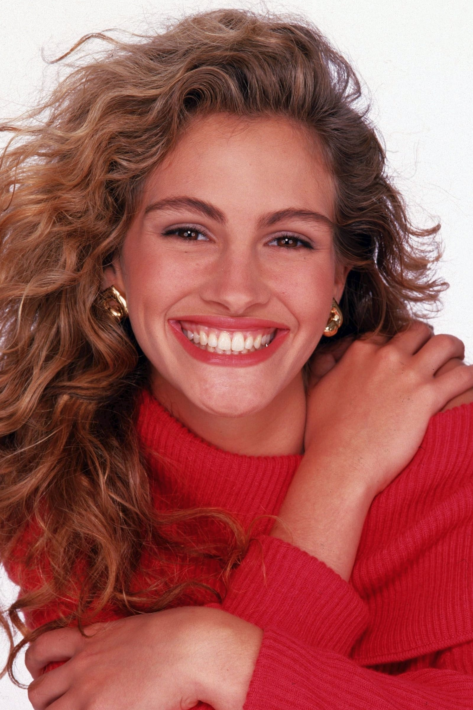

Katalina Cortes T
Coelemu, Chile
Tecnico en Logistica y Operaciones Industriales | Potencial Desarrolladora full stack
Apasionada por el trabajo en equipo, la buena comunicacion, el orden en los locales laborales; me resulta fascinante la lectura, los viajes, el aprendizaje y las tardes al aire libre. Maneja el Espanol, Ingles y Portugues sin problema. Siempre con la mejor disposicion para aprender y mejorar.
Educación
Inacap - Tecnico en Logistica y operaciones industriales
Mar 2020 - May 2022
Capacitada para administrar y supervisar bodegas de toda clase
Cambridge - Lengua y Literatura
Mar 2018 - Nov 2019
Uso profesional y comunicacional de la lengua Inglesa y Portuguesa
Solicitudes de Conexión (2)
Ian Somerhalder
Stephen James
Tus Conexiones (500+)
- Julia Roberts
- harry Potter
- Alex Pettyfer
- Sofia Vergara
- Chris Martin